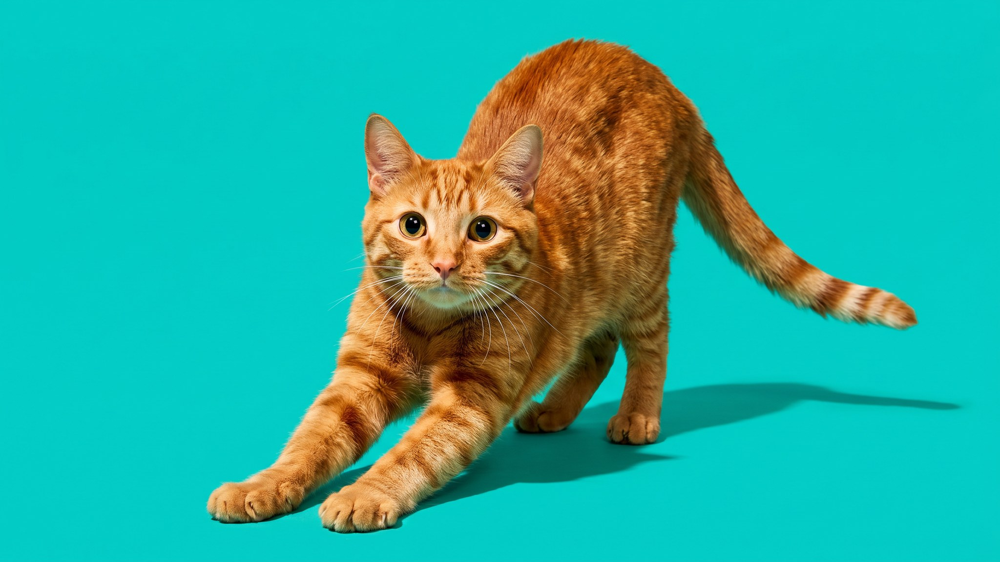

Вы открываете дверь, и кошка прямо перед вами опускается на передние лапы, выпускает когти и выгибает спину дугой. Три секунды, потом подходит к вам. Это не случайность и не разминка. За коротким ритуалом стоит несколько сигналов сразу, и читать их полезно: кошка, которая перестала так делать, иногда говорит о чём-то важном. Разбираем, что происходит, зачем нужны подушечки и когти, и когда стоит записаться к ветеринару. Статья на 3 минуты чтения.
🐾 Хотите понять, что кошка говорит вам?
Опишите ситуацию или пришлите видео в AnimaLife — AI разберёт поведение вашего питомца и подскажет, что делать. Бесплатно, ответ за минуту.
Разобрать поведение → Разобрать в MAX →
У вас iPhone? AnimaLife есть в App Store
Потягивание у кошек привязано к двум состояниям: пробуждение и расслабленность. Когда кошка растягивается при виде хозяина, тело говорит: рядом с вами безопаснее, чем наедине. Она находится в том же расслабленном состоянии, что и во время отдыха. Напряжённая, настороженная кошка так не делает: в таком состоянии тело собрано, а не вытянуто.
Этологи описывают это как приветственное потягивание. Оно встречается у кошек, которые освоились рядом с конкретным человеком. Перед незнакомцем или в незнакомом месте кошка потянется куда реже или не потянется вообще. Так что если кот встречает вас у двери и сразу вытягивается, это один из надёжных маркеров того, что ему с вами безопасно.
Полное приветственное потягивание состоит из нескольких элементов, у каждого своя функция.
Подушечки лап у кошки работают как постоянный инструмент маркировки. Железы там активны всегда, след остаётся на любой поверхности, по которой кошка прошла. Когда она потягивается с упором именно в то место, где вы стоите или часто находитесь, она метит это место как своё.
Звучит как территориальное поведение, и так и есть, но в домашнем контексте это работает иначе: кошка включает вас в зону своей безопасности. Объект, который она метит, она считает своим в хорошем смысле. Хозяева, которых кошка обходит стороной, такой маркировки не получают.
Потягивание у конкретной кошки со временем становится привычным. Если оно резко меняется, это сигнал.
Любой из этих пунктов, который держится больше двух-трёх дней, стоит обсудить с ветеринаром. Опорно-двигательный аппарат у кошек меняется с возрастом, и снижение подвижности в отдельных зонах лучше замечать рано. Не ждите, пока перемена станет очевидной, кошки умеют скрывать дискомфорт.
🐾 У вашей кошки так же?
Расскажите в AnimaLife, как ведёт себя ваш питомец, — приложение объяснит причину и даст пошаговый план. Бесплатно, без записи к специалисту.
Разобрать свой случай → Разобрать в MAX →
У вас iPhone? AnimaLife есть в App Store
🐾 Понравился разбор?
Подпишитесь на канал — каждый день разбираем по одному тревожному симптому у кошек и собак: что в пределах нормы, а когда пора к врачу. Подпишитесь, чтобы не пропустить разбор, который может спасти здоровье вашего питомца.
← Все статьи · Открыть AnimaLife в Telegram · RSS
Материал носит информационный характер и не заменяет очную консультацию ветеринара.